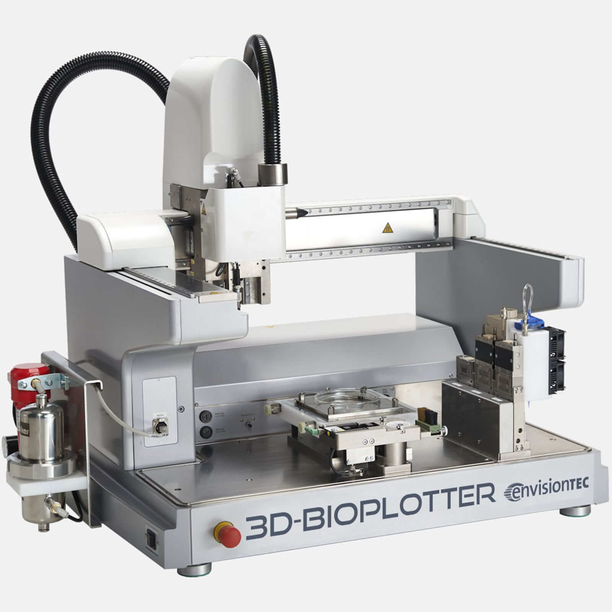

Envisiontec 3D-BioPlotter este o imprimantă 3D ce folosește biomateriale în realizarea de
implanturi sau alte obiecte pentru aplicații bio-medicale. Imprimanta are aplicabilitate extrem de
largă în medicina modernă, fiind folosită în Ingineria țesuturilor (lucrări de regenerare osoasă,
printare de organe, biofabricare țesuturi), în cercetare medicală și bioinginerie (modelare
conceptuală) sau în medicația controlată (eliberare controlată de medicamente).
